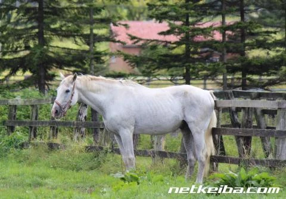
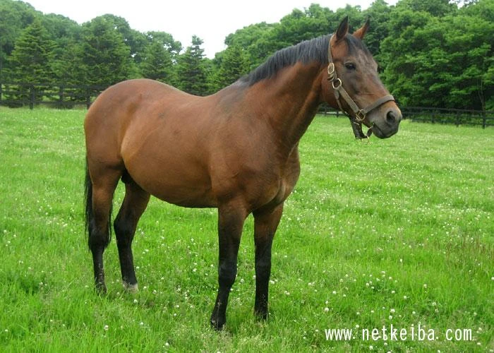
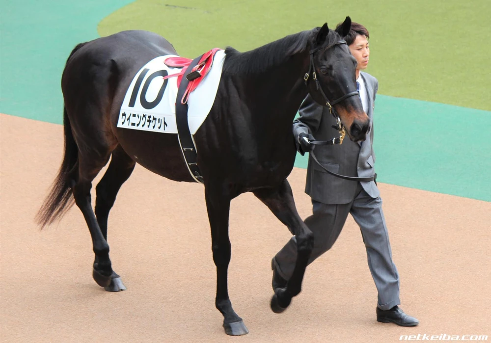

The "BNW" nickname was popularized by the media because each of the three horses won exactly one leg of the Japanese Triple Crown in 1993—a rare occurrence where no single horse dominated the entire series.
| Biwa Hayahide | Narita Taishin | Winning Ticket |
|---|---|---|
 |
 |
 |
| Nickname: Big face | Nickname: N/A | Nickname: Tickezo |
| Sex: Stallion | Sex: Stallion | Sex: Stallion |
| Color: Gray | Color: Bay | Color: Dark Bay |
| Birth: March 10, 1990 | Birth: June 10, 1990 | Birth: March 21, 1990 |
| Death: July 21, 2020 | Death: April 13, 2020 | Death: Febuary 18, 2023 |
| Birthplace: Hayata Farm Niikappu Branch | Birthplace: Niikappu Town, Hokkaido, Japan | Birthplace: Shizunai Town, Hokkaido, Japan |
| Owner: Biwa Ltd. | Owner: Hidenori Yamaji | Owner: Yoshimi Ota |
| Major Wins |
|---|
| 1992 Daily Hai 3-year-old Stakes, G2 |
| 1993 Kobe Shimbun Hai, G2 |
| 1993 Kikuka Sho, G1 |
| 1994 Kyoto Kinen, G2 |
| 1994 Tenno Sho Spring, G1 |
| 1994 Takarazuka Kinen. G1 |
| 1994 Sankei Sho All-comers, G3 |
| Major Wins |
|---|
| 1992 Radio Tampa Hai 3-year-old Stakes, G3 |
| 1993 Satsuki Sho, G1 |
| 1994 Meguro Kinen, G2 |
| Major Wins |
|---|
| 1993 Yayoi Sho, G2 |
| 1993 Japanese Derby, G1 |
| 1993 Kyoto Shimbun Hai, G2 |